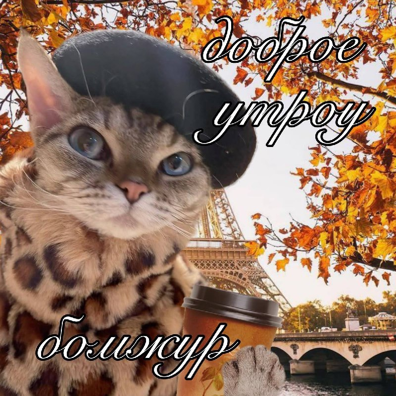
01
Общество и городская среда · событие дня

Лежачий инвалид I группы от истощения превратился в живой скелет, но больницы месяцами отказывали ему в госпитализации.…
В Минприроды подчёркивают, что для выяснения причин нужны дополнительные исследования.…
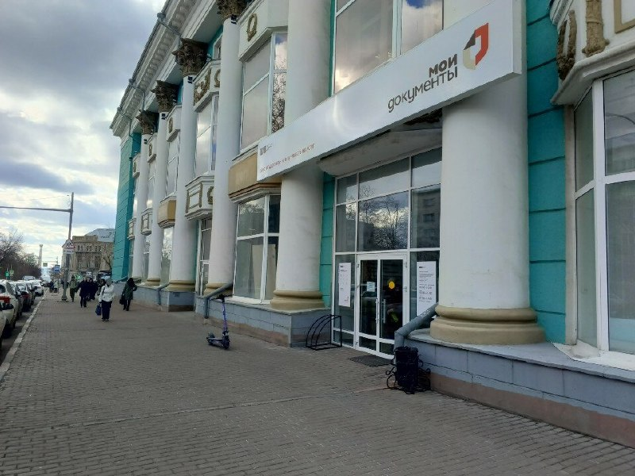
Кроме того, нужно перевозить МФЦ на Промышленной со второго этажа здания.…
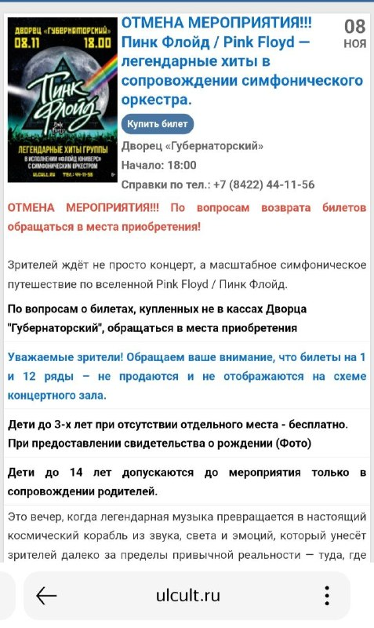
Депутат Госдумы Алексей Куринный крайне ограничен во времени, погружен в деятельность профильного комитета и практически утратил интерес к управлению местными коммунистами .……
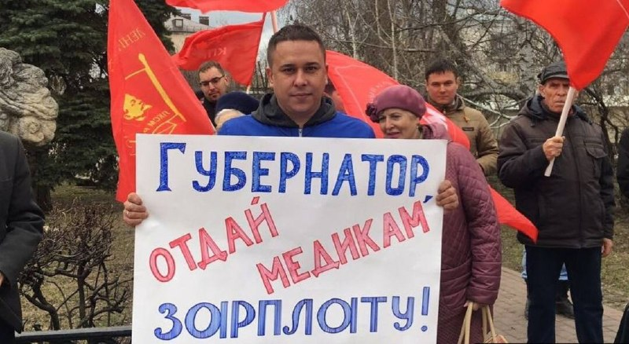
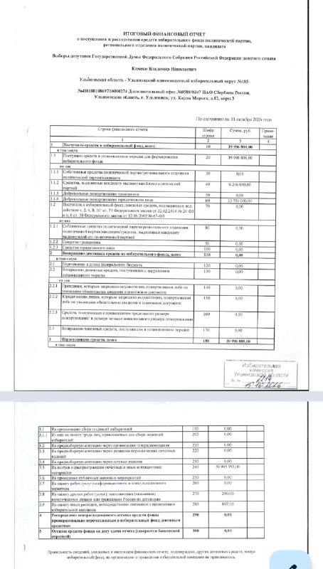
В такие группы приглашают жильцов, после чего публикуют разные ссылки для «голосования по благоустройству», «проверки приборов учета», «обсуждения тарифов» или решения срочных коммунальных вопросов.……
Уважаемые жители Старокулаткинского района! 29 октября, с 10:00 до 11:00ч.…
Россия Президенты Владимир Путин күп балалы аналарга автомәктәпләрдә укыганда ташламалар бирергә тәкъдим итте.…
В Минприроды подчёркивают, что для выяснения причин нужны дополнительные исследования.…
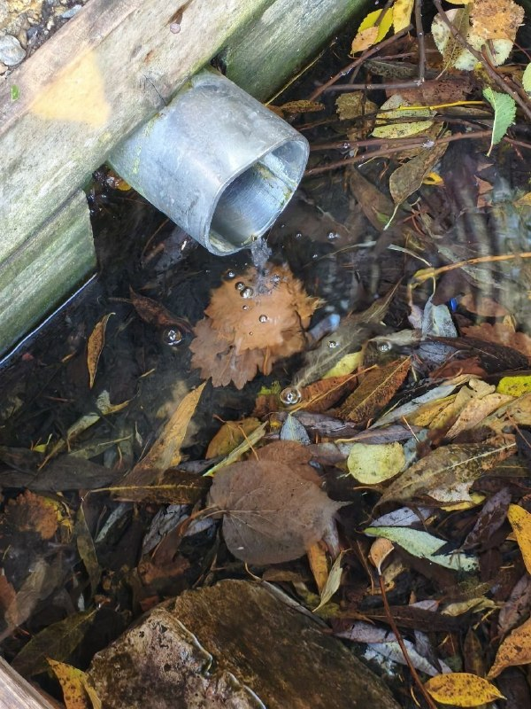
По словам министра имущественных отношений Олега Ягфарова, к концу года дефицит составит около 39 млн рублей , из которых примерно 14 млн приходится на помещения бывшего «Детского мира».…
Собирайтесь с коллегами или приходите сами — за нашим столом всегда рады гостям! Ждём вас в «Хинкальной Лавке»!…
Основная часть средств пошла на отопление, охрану, локальный ремонт окон и кровли.
19 января 1943 года решением высшего органа власти СССР была образована Ульяновская область.…
На работы по сохранению бывшего учебного корпуса Суворовского училища в Краснознаменном переулке и здания штаба необходимо более 314 миллионов рублей.…
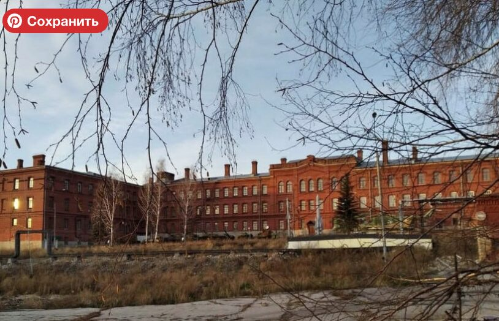
На сохранение исторических зданий бывшего Симбирского кадетского корпуса и штаба Суворовского училища на улице Спасской, 7 в Ульяновске требуется более 314 млн рублей.…

Больше об итогах и планах — в карточках 👆 🇷🇺 Ульяновская область в…
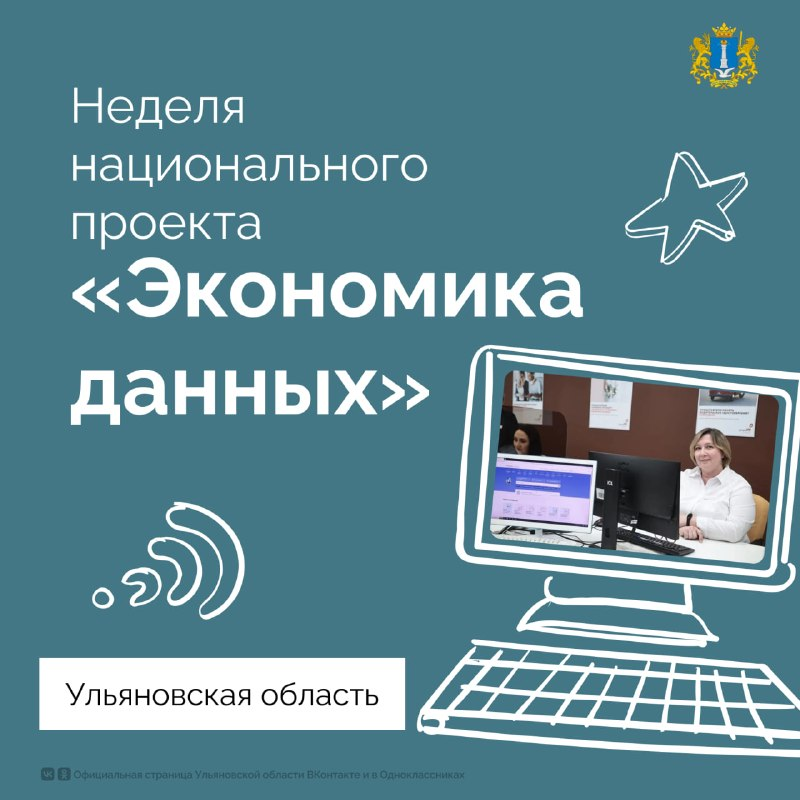
Среди продуктов заметнее всего подорожали куриные яйца — на 10,11% за месяц, из непродовольственных товаров — средства связи на 2,6%.…
При этом результат сентября стал наибольшим с начала 2026 года.
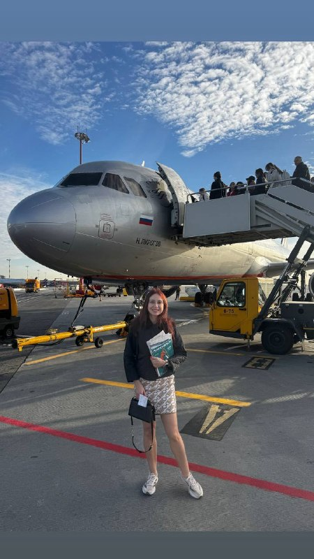
Лежачий инвалид I группы от истощения превратился в живой скелет, но больницы месяцами отказывали ему в госпитализации.…
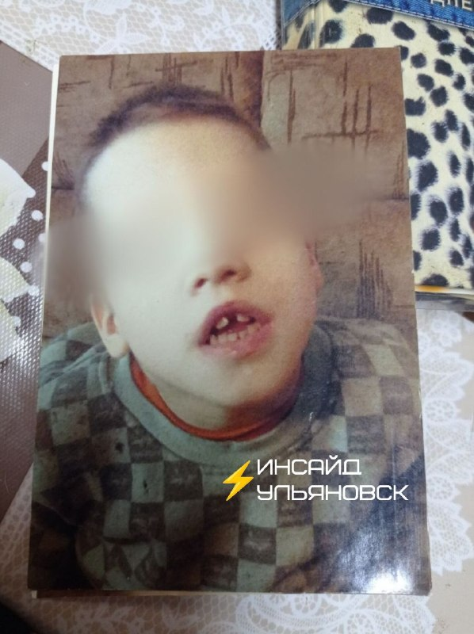
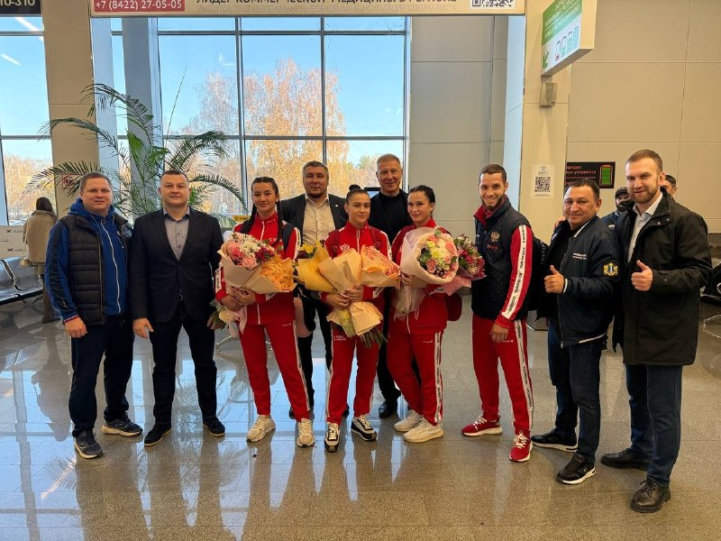
Всего по итогам выступления на Чемпионате мира по кикбоксингу WKF в Колумбии сборная России завоевала 95 медалей.…
Поднимались на пьедестал с флагом и под гимн страны. Большой вклад в победу внесли тренеры…
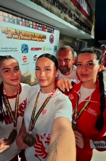
Впереди у ульяновцев домашняя встреча с ивановским «Текстильщиком», который находится среди аутсайдеров ФНЛ.…
В копилке воспитанников Федерации кикбоксинга Ульяновской области четыре золотых медали - Ева Павловская, Кристина Галныкина…
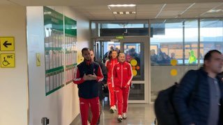
Димитровград на соревнованиях представляли воспитанницы спортивной школы имени Жанны Лобановой.…
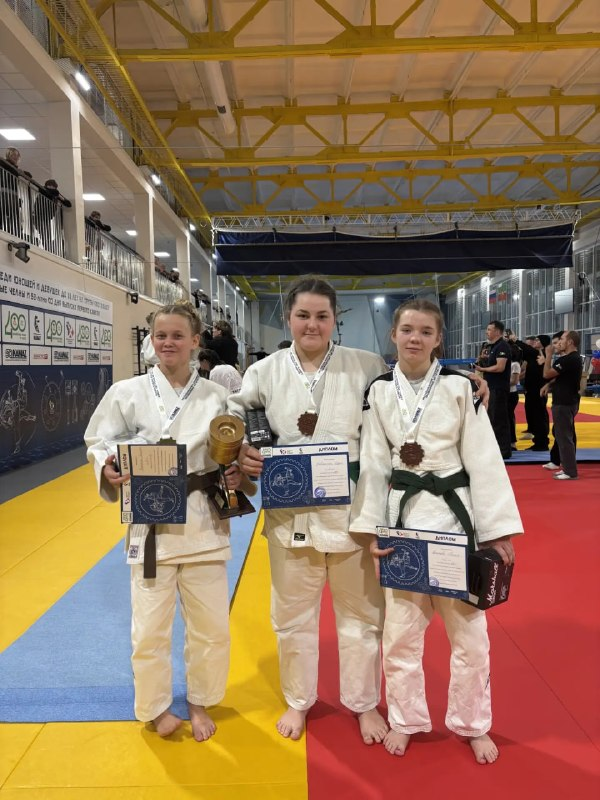
На стадионе УлГАУ в Ульяновске прошёл межрегиональный турнир «Общероссийского дивизиона» — общероссийские соревнования студенческих команд по футболу.…
В субботу предстоит домашняя игра с одним из аутсайдеров ФНЛ — ивановским «Текстильщиком»
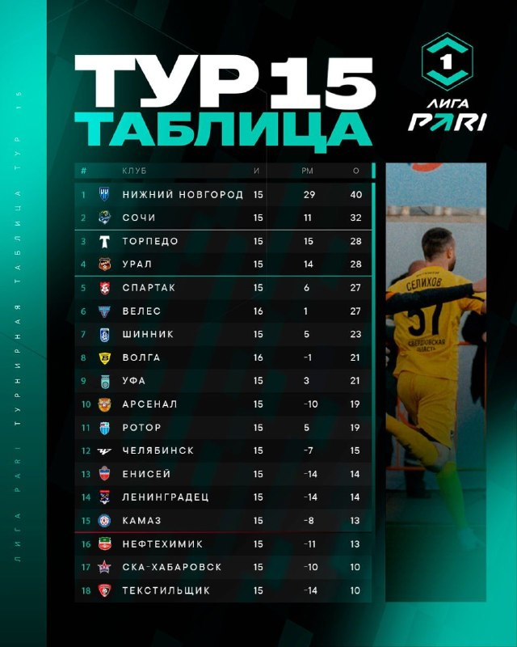
В прошлом сезоне Харри наколотил 73 мяча во всех турнирах.

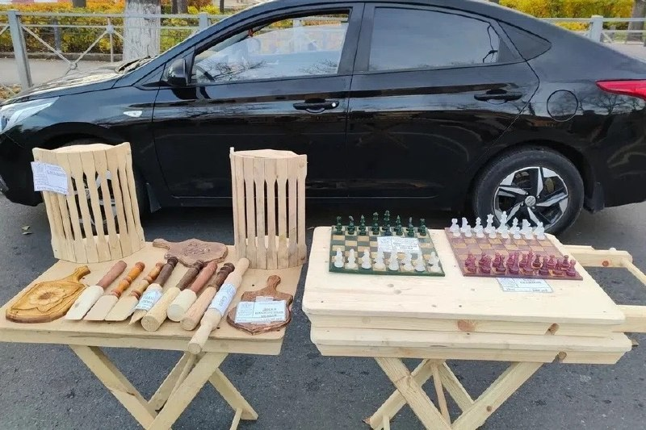
Покупатели высоко оценили разнообразие товаров, которые производят в исправительных учреждениях области. Отдельно они отметили, что продукцию можно заказать по индивидуальным проектам.…
О пропаже деревьев в Белоярском участковом лесничестве в полицию сообщил представитель Сенгилеевского лесничества.…
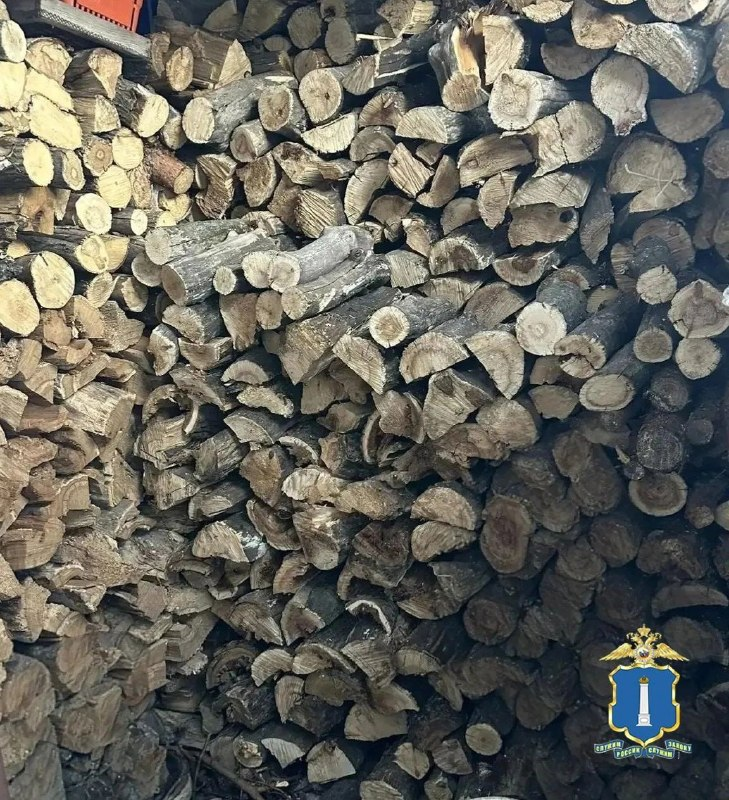
Накануне в Ульяновском областном суде произошло событие, которое иначе как сенсационным не назовешь.…
Мужчина скончался на месте до приезда скорой помощи. У него взяли кровь для анализа.…
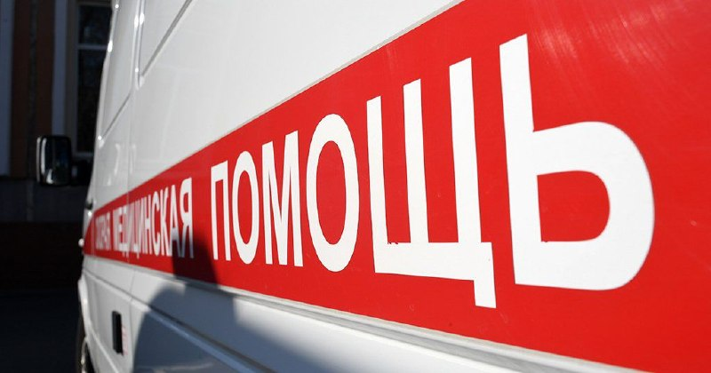
26 октября в Мелекесском районе Ульяновской области подросток на мопеде Alpha RS не справился с управлением и опрокинулся на проезжую часть.…

С начала 2026 года в Ульяновской области потушили 23 лесных пожара — в 2,5 раза меньше, чем за аналогичный период прошлого года.…

Транспортное средство опрокинулось прямо на проезжей части. В результате падения подросток получил травмы.…
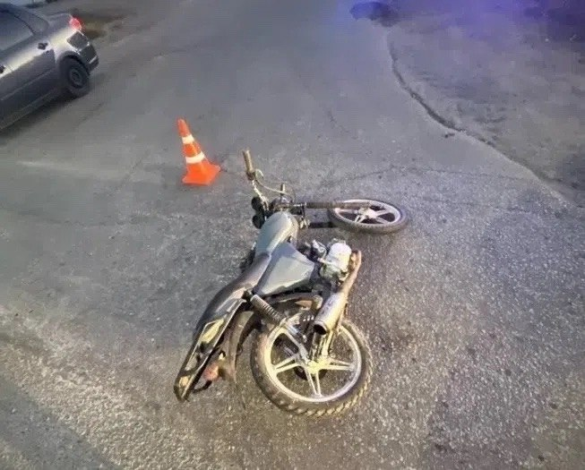
Карла Либкнехта 22. Автоинформатор говорит об аварии, которую специалисты якобы устраняют уже 5 дней!…
На недавнем собрании жильцов объявили о необходимости замены лифта.…
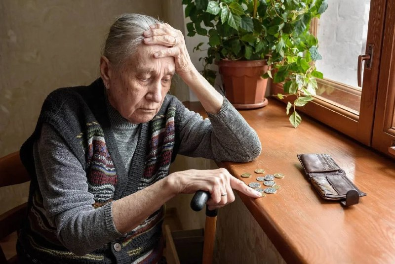
26 октября Губернатор Ульяновской области провёл рабочую встречу с директором Ульяновского регионального филиала Россельхозбанка Иваном Федосеевым.…
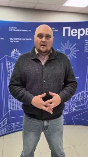
Основные задачи — развитие творческих способностей и социальной активности детей и молодёжи, сохранение традиций, раскрытие потенциала участников и патриотическое воспитание.…
Россия — миру» в ателье KUZINA и мастерской Ольги Ильченко.
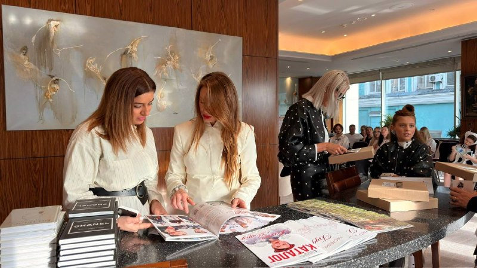
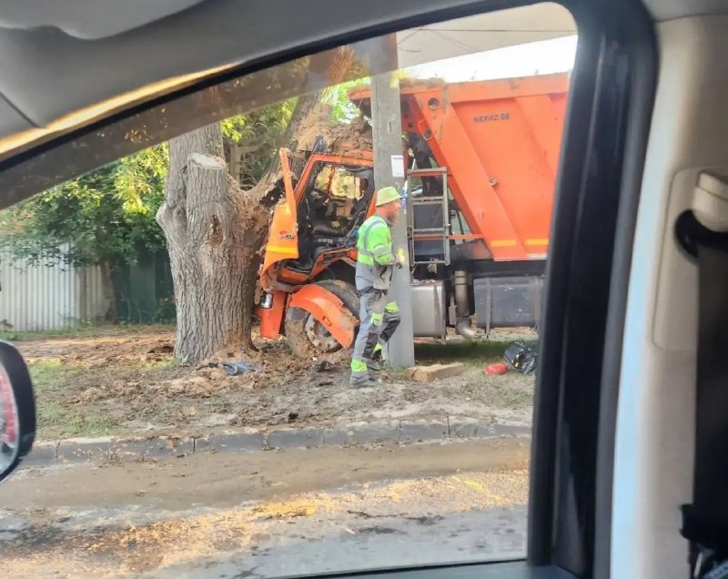
Для жителей организуют бесплатную анимационную программу на сцене поезда.…
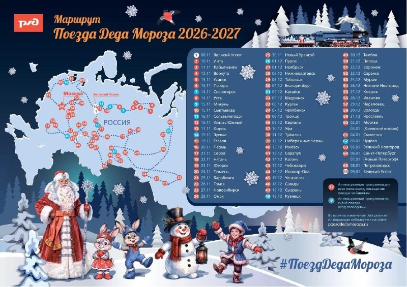
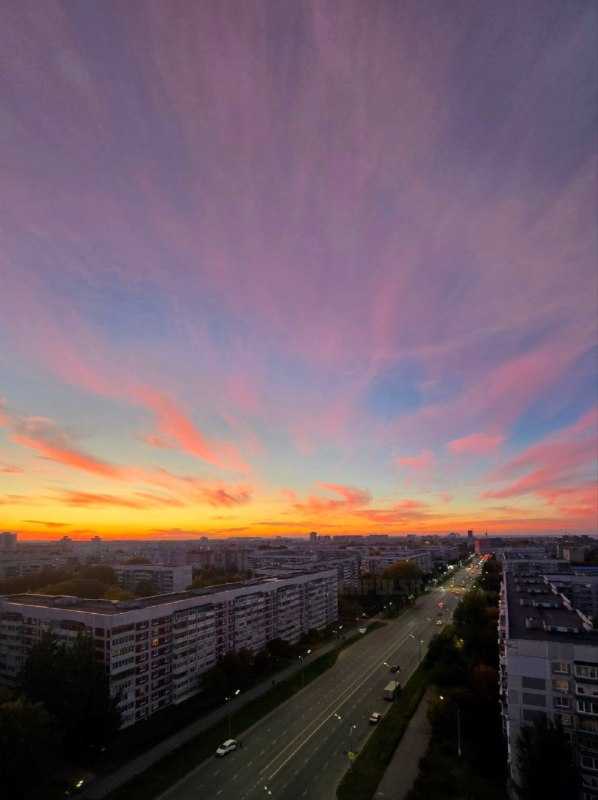
В Москве, в Центральном детском магазине, представили коллекцию из 35 образов, изготовленных в ульяновских ателье KUZINA и мастерской Ольги Ильченко.…
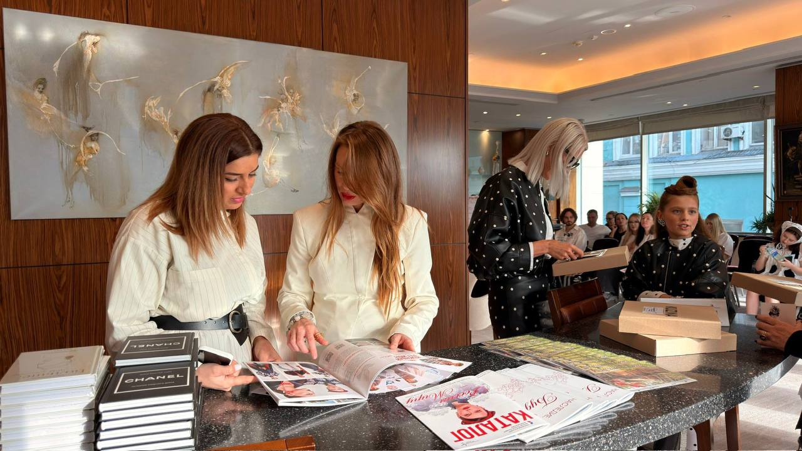
🔥 Французское качество по суперцене! Забудьте о постоянной смене очков для чтения, работы за компьютером и дали.…
О преимуществах проекта рассказываем в карточках.…
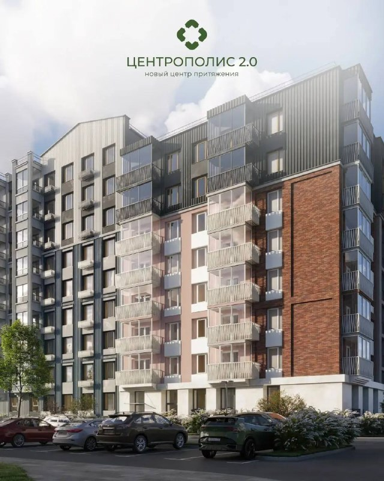
Физику нужно сдать минимум на 41 балл, информатику и обществознание — на 45. Проект приказа пока не утверждён окончательно.…
Всего на конкурс было подано более 350 заявок. В финал вышли 40 педагогов: 20 учителей школ и 20 работников детских садов.…
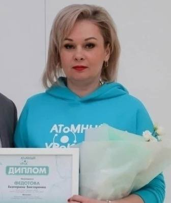
Согласно проекту, минимальные баллы распределяются следующим образом: ▪️ 40 баллов — русский язык, профильная математика, история, иностранный язык, литература, биология, география и химия.…
Собинова 📅 Когда: 28 октября в 15:00 📍 Где: Музыкальное училище им. Г. И. Шадриной УлГУ (ул.…
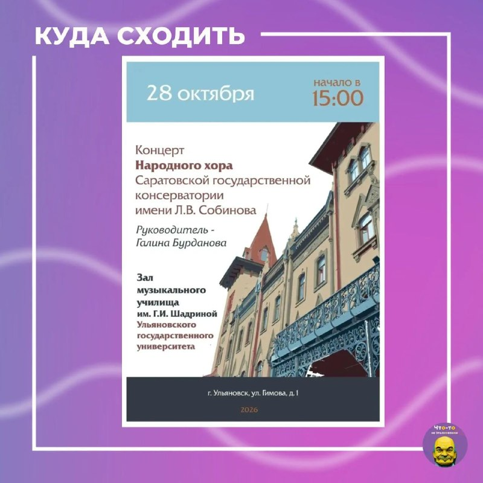
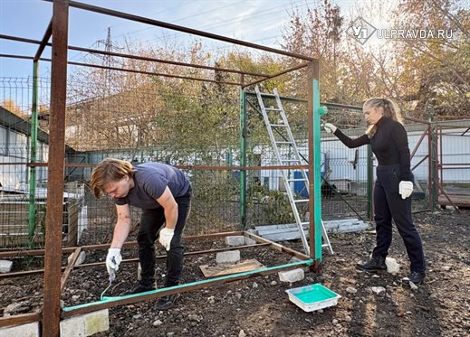
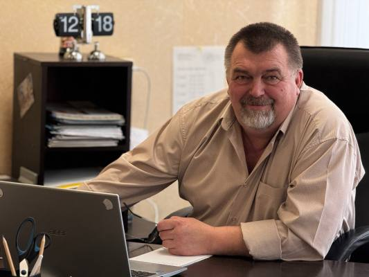
В рамках профориентационного проекта «Билет в будущее» — части национального проекта «Молодёжь и дети», инициированного президентом России Владимиром Путиным, — обучающиеся Нижнеякушкинской школы побывали на экскурсии в пожарно‑спасательной части № 37 с.Новая Малыкла.…
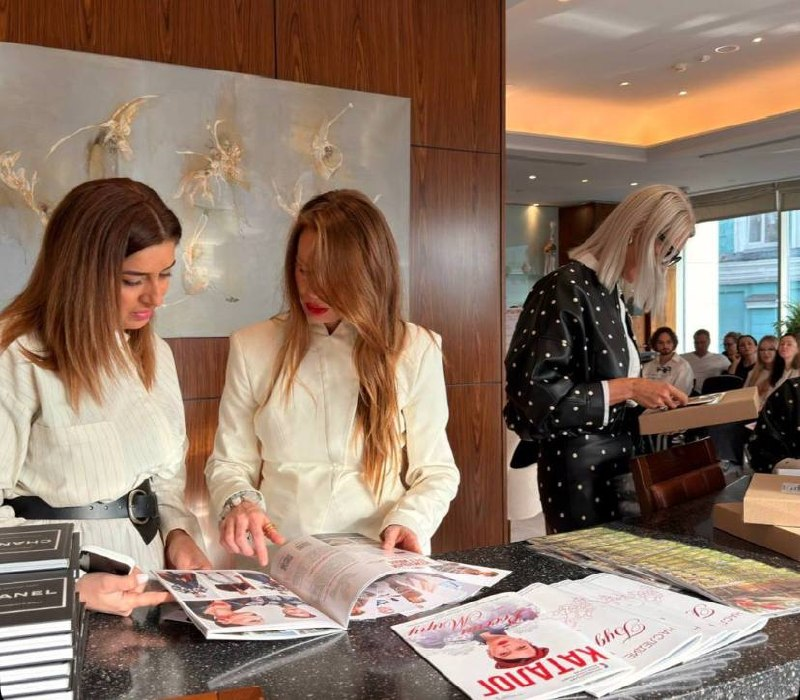
В планах — ЮАР и другие страны. Ульяновск выходит на мировую сцену с культурным кодом.
Наши артисты достойно представили свой район во втором этапе престижного творческого состязания, завоевав высокие…
Ленина, дом 4/5 — Сонит — ЯЖЕВИ — deshkawiwi — Слушаю Молчу — Сергей Горбатин Музыканты будут располагаться в разных уголках концертного зала!…
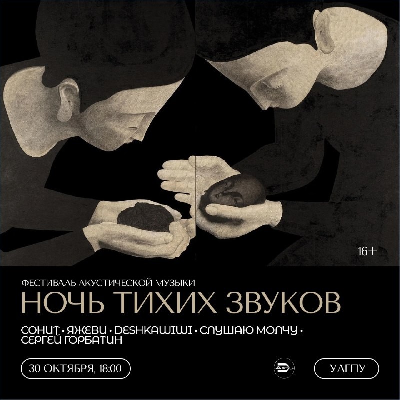
| Тема | Завтра | Ожидание | Уверенность |
|---|---|---|---|
| Суды и криминал | ↓ спад | ~33.4 упоминаний | средняя |
| Городская среда | ↓ спад | ~11.1 упоминаний | средняя |
| Школы и вузы | ↓ спад | ~12.6 упоминаний | средняя |
| Транспорт и дороги | ↓ спад | ~37.4 упоминаний | средняя |
| Медицина | ↓ спад | ~7.0 упоминаний | средняя |
| Губернатор / власть | ↓ спад | ~27.4 упоминаний | средняя |